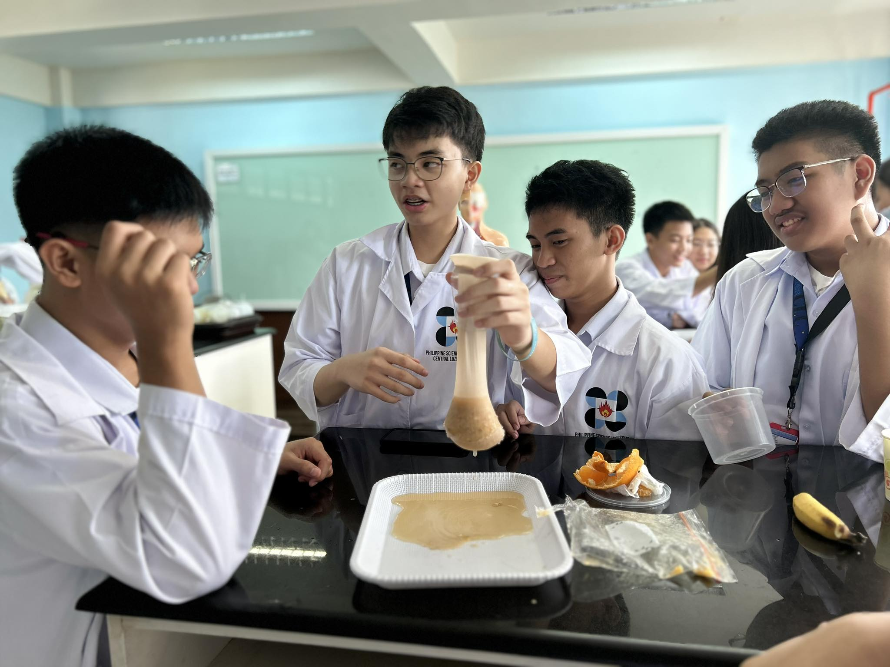
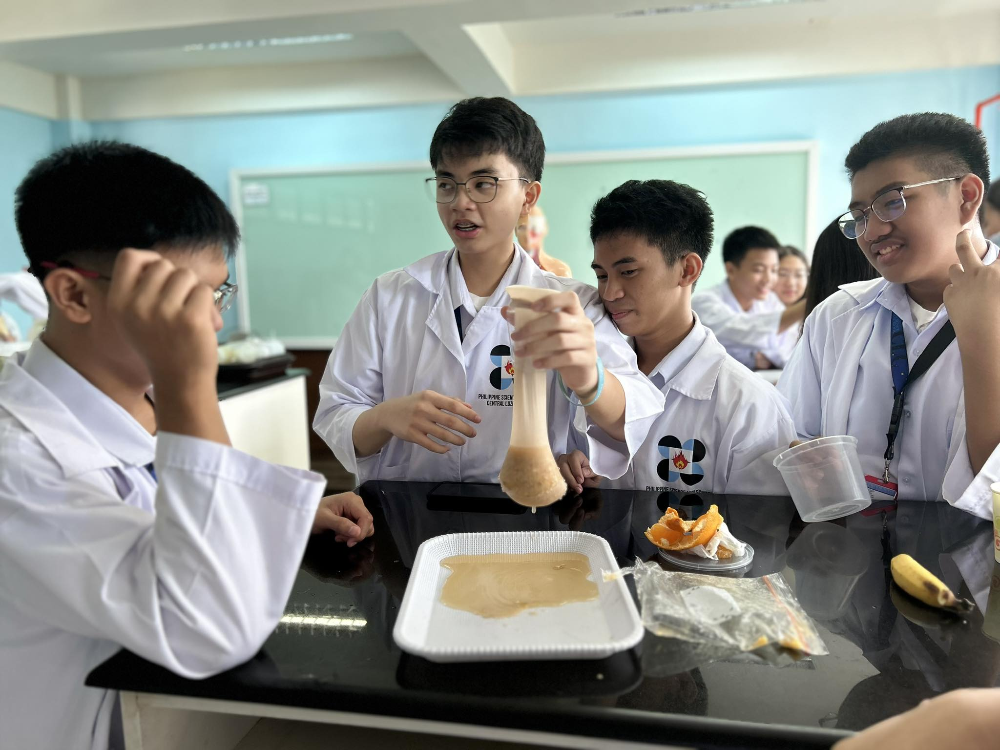

Section 1:
Stages of Food Processing
Subsection: Crushing Stage
In this first part, the people conducting the experiment (we will call 'our group') chose to put bananas and crackers in a ziplock bag, simulating ingestion. Water was then added, replicating what happens in the mouth (saliva secretion). The bag is then crushed, simulating the mechanical digestion or chewing.So far in this, the ziplock bag represents the mouth. However, by adding orange juice, we mimic the stomach's gastric juice, with the bag now being the stomach. In digestion, biomolecules get broken down. So, looking at our foods, we can see that the biomolecules present would be Carbohydrates (crackers) proteins (present in banana), nucleic acid (banana), and lipids (banana).
Subsection: Transfer Stage
Our group then transfers the crushed up material into the stocking. The stocking is then squeezed, wringing out all the liquid. The liquid then falls onto a tray, with the stocking representing the small intestines and the tray representing the bladder. What's left in the stocking is a solid substance which will then be turned into feces. By pushing on it, we are simulating its movement throughout the rest of the system.
Section 2:
Simulation of Absorption
The paper towel with 4 folds (the most) absorbed the highest amount of water, due to the amount of surface area the water has to pass through before reaching the other side. Due to said amount, less water reaches the end. This tissue paper also relates to the small intestine, which uses its high surface area (from villi and microvilli) to absorb water and other nutrients. The folds in the villi ensure that it absorbs as much possible, similar to the tissue paper.
Section 3:
Simulation of Bile Action
Bile helps in the breakdown of lipids, however, it does not digest, is just emulsifies the fat, allowing it to be digested/absorbed better by other enzymes.
 
